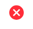

Icone di stato di GovWay: convenzione e sua logica
- Prodotto:
GovWay 3.4.4 — console di gestione (govwayConsole) e console di monitoraggio (govwayMonitor)
- Criteri:
WCAG 2.1 — 1.4.1 Uso del colore, 1.4.11 Contrasto non testuale, 1.1.1 Contenuti non testuali
- Data:
- 20 novembre 2026
- Revisione prevista:
entro il 20 novembre 2027
Perché questa pagina
Nelle due console di GovWay molti stati si distinguevano solo dal colore: pallini verdi, gialli e rossi tutti uguali, glifi diversi solo per tinta, barre e fette dei grafici collegate alla legenda dal solo colore. Chi non distingue i colori, o li vede in modo diverso, non riceveva l'informazione (WCAG 1.4.1).
Ogni caso è stato censito a mano, pagina per pagina, e corretto con un'unica convenzione: la forma porta il significato, il colore si aggiunge. Questa pagina riporta la convenzione, le icone scelte, la logica di ogni scelta e i rapporti di contrasto misurati.
È anche la prova che giustifica la voce style_color_misuse nei registri dei falsi positivi di questo target (falsePositives.govway_console.json e falsePositives.govway_monitor.json): vedi La regola IBM style_color_misuse.
La convenzione
Le stesse forme valgono in tutte e due le console. Il significato, però, non è lo stesso ovunque: per questo le icone sono divise in famiglie, e dove il significato cambia cambia anche il simbolo.
Simbolo |
Significato |
Logica |
|---|---|---|
cerchio con spunta |
ok, abilitato |
la spunta è il segno universale di «a posto»; la lista transazioni la usava già per l'esito Ok |
triangolo con «!» |
avviso |
la forma dell'avviso nella segnaletica di sicurezza (ISO 3864) e nelle principali librerie di interfaccia (Microsoft Fluent, Apple SF Symbols, Material, Bootstrap) |
cerchio con X |
errore |
la X aggiunge un secondo indizio oltre al contorno; evita anche che il cerchio con «!» abbia significati diversi in punti diversi |
cerchio con trattino |
disabilitato |
«spento», distinto dall'errore: un'API disabilitata non è un'API sbagliata |
cerchio pieno a metà |
parzialmente abilitato |
lo stato fra i due estremi; resta giallo, fra il verde e il rosso |
Stato di un'entità (console e monitor)
API, erogazioni, fruizioni, gruppi, connettori multipli, utenti; nel monitor lo stato del gateway nell'intestazione e nella pagina di stato, la gravità degli eventi, lo stato delle API in Configurazione API. Immagini SVG di 16×16 px con un alone bianco, che le stacca anche dal blu dell'intestazione.
Icona |
Significato |
Dove e con quale testo |
|---|---|---|
ok / abilitato |
«API attiva», «API correttamente configurata», «Configurazione abilitata», «Utente con abilitazioni valide»; stato del gateway Ok; eventi INFO e DEBUG; API abilitata |
|
avviso |
API con azioni mancanti su alcuni servizi o con avvisi di profilo; connettore con scheduling della consegna disabilitato; stato del gateway Warning; eventi WARN |
|
errore |
API senza risorse, servizi o azioni; controllo degli accessi con autorizzazione senza fruitori, ruoli o scope; utente non valido o con password scaduta; stato del gateway Error; eventi ERROR e FATAL |
|
parzialmente abilitato |
«Alcuni gruppi dell'API sono disabilitati» (elenco erogazioni e fruizioni, Configurazione API) |
|
disabilitato |
API, gruppo o connettore disabilitato; colonna «Abilitato» delle porte (modalità avanzata) |
|
non attivo |
gruppo predefinito con tutte le risorse riassegnate ad altri gruppi; API senza stato |
Singola funzionalità configurata (console)
Righe della pagina Configurazione di erogazioni e fruizioni (Controllo accessi, Rate limiting, Validazione, CORS, Caching, Sicurezza messaggio, MTOM, Trasformazioni, Tracciamento, Registrazione messaggi, Proprietà, Opzioni avanzate) ed elenchi di policy, plugin, handler e regole.
Qui il significato è diverso dallo stato di un'entità: dice se una funzionalità è abilitata e configurata bene. Resta il sigillo che la console usava già, così la funzionalità si riconosce a colpo d'occhio dall'entità (cerchio); cambia il simbolo interno, che segue la convenzione. Prima le quattro icone avevano tutte la spunta, anche quella di «Disabilitato». Disegno di 12 px dentro un riquadro di 16 px, come le icone precedenti.
Icona |
Significato |
Esempi |
|---|---|---|
abilitata e configurata |
«Abilitato», autenticazione e autorizzazione attive |
|
abilitata, non bloccante |
«WarningOnly» di Rate limiting, Validazione e policy; autenticazione «Opzionale» |
|
abilitata ma configurata in modo errato |
sicurezza o MTOM incompleti, autorizzazione senza fruitori, trasformazione che non trasforma nulla: il testo visibile può restare «Abilitato», la X dice l'errore e il motivo è nel testo alternativo |
|
disabilitata |
«Disabilitato» |
Stato di salute degli allarmi (console)
La riga «Allarmi» della Configurazione e l'elenco degli allarmi quando mostra gli stati. È uno stato di salute, non una configurazione: usa le forme degli allarmi del monitor, a 12 px.
Icona |
Significato |
|---|---|
Ok |
|
Warning |
|
Error |
|
allarme disabilitato, oppure abilitato ma senza stato («Stato non disponibile») |
Allarmi del monitor
Elenco e riepilogo in alto. Glifi del font Material Icons già caricato dal monitor. Le stesse forme valgono con e senza la presa in carico; prima, senza presa in carico, tutti gli stati erano lo stesso pallino.
Icona |
Significato |
|---|---|
Ok (check_circle) |
|
Warn (warning) |
|
 |
Error (cancel) |
Disabilitato (do_not_disturb_on) |
|
|
preso in carico (acknowledge): la stessa icona con una piccola spunta nell'angolo. Prima era un glifo diverso, uguale per Warn ed Error e distinto solo dal colore |
Esiti delle transazioni e grafici (monitor)
Lista |
Grafico |
Esito |
|---|---|---|
Ok |
||
Fault applicativo (prima nella lista era il cerchio con «!») |
||
Fallita (prima nella lista era il triangolo: i due glifi erano invertiti rispetto alla convenzione) |
Gli stessi glifi sono usati nella lista delle transazioni (vista personalizzata e Live), accanto all'etichetta «Esito» del dettaglio della transazione e nelle consegne ai connettori multipli; nella vista classica le immagini sono le SVG delle entità ( ).
Nei grafici a barre per esito l'icona compare sopra ogni colonna non vuota e nella legenda; le colonne a zero non hanno icona. Le icone sono disegnate in SVG, non con il font, così restano corrette anche nell'esportazione del grafico come immagine.
Nelle torte la percentuale stampata sulla fetta è seguita dal numero della voce di legenda, per esempio «35.4% (1)»: senza, la fetta si collegava alla sua voce solo dal colore. Le fette troppo piccole per avere un'etichetta restano collegate dal colore e dal suggerimento; per loro l'alternativa testuale è il report «Tabella» della stessa distribuzione, a cui rimanda anche il nome accessibile del grafico.
Tracciamento PDND (monitor)
Icona |
Stato dell'invio |
|---|---|
inviato |
|
in elaborazione (orologio pieno) |
|
errore, pubblicazione fallita |
|
in attesa (cerchio con puntini) |
Lo stato è anche annunciato ai lettori di schermo; prima era solo nel suggerimento al passaggio del mouse.
Contrasti
Per WCAG 1.4.11 ogni parte grafica necessaria a capire lo stato deve avere almeno 3:1: il contorno contro lo sfondo della pagina e il simbolo interno contro il riempimento. I rapporti sono calcolati con la formula WCAG della luminanza relativa sugli sfondi reali: bianco, #f6f6fc (righe alterne), #daffda (riga sotto il puntatore), #214171 (intestazione del monitor), #46464e (riepilogo degli allarmi).
Elemento |
Colore |
Rapporto minimo |
|---|---|---|
verde (entità, funzionalità) |
#2e9e44 |
3,45:1 la spunta bianca sul verde; 3,20:1 sulle righe alterne, con bordo #1e7a2c |
rosso (entità) |
#e53935 |
4,23:1 la X bianca sul rosso |
giallo (avviso, parziale) |
#f9ce1d, bordo #7a5f00 |
il giallo sul bianco ha 1,5:1, quindi la forma la danno bordo e divisorio scuri: 6,06:1 sul bianco, 4,00:1 sul giallo; «!» scuro sul giallo 10,5:1 |
grigio (non attivo) |
#86868b |
3,37:1 sulle righe alterne; il trattino bianco 3,62:1 |
sigillo arancio |
#fbb03b, bordo #7a4e00 |
bordo 7,20:1 sul bianco; «!» 8,62:1 |
sigillo rosso |
#ff0000 |
4,00:1 la X bianca |
sigillo grigio |
#46464e |
9,35:1 |
alone delle icone di entità |
bianco |
10,2:1 sul blu dell'intestazione |
allarmi e PDND su fondo chiaro |
#ff2d39, #b87b36, #009c4b, #86868b |
3,26:1 nel caso peggiore (arancio sulla riga sotto il puntatore). Prima i colori del Tracciamento PDND erano quelli pensati per il fondo scuro: arancio 1,9:1, grigio 1,8:1, verde 2,7:1 |
allarmi sul riepilogo scuro |
#ff5660, #ffab4d, #00b658, #c2c2c9 |
3,01:1 nel caso peggiore (rosso) |
glifi delle transazioni |
#3f3f47 |
4,85:1 sul rosso chiaro della cella Fallita |
icone dei grafici |
colore della serie scurito |
il colore si scurisce finché arriva ad almeno 3:1 sul bianco; il simbolo interno è bianco |
Realizzazione
Una sola scelta dell'icona per le due console: la classe IconaStato del package condiviso org.openspcoop2.web.lib.mvc (tools/web_interfaces/lib/mvc). La usano i JSP della console al posto delle 16 copie della scelta che c'erano, e nel monitor l'intestazione e Configurazione API.
Valori di stato con un significato proprio: CheckboxStatusType ha ora PARZIALE ed ERRORE, oltre ad ABILITATO, DISABILITATO e WARNING_ONLY. Prima il rosso valeva sia «disabilitato» sia «errore», e il giallo sia «parziale» sia «avviso»: sostituire le immagini non bastava.
Immagini: le SVG di questa pagina sono quelle di GovWay, in tools/web_interfaces/lib/web-content/images/tema_link.
Testo alternativo: è lo stato stesso, non più la parola fissa «Stato».
Casi censiti e corretti
Console di gestione:
elenchi di erogazioni, fruizioni, API, utenti, allarmi, policy, plugin, handler, regole;
dettaglio di erogazioni, fruizioni e API (stato accanto al nome);
pagina Configurazione dei gruppi (stato del gruppo e righe delle funzionalità);
connettori multipli;
date di scadenza dei certificati, rosse e ora seguite da «(scaduto)».
Console di monitoraggio:
intestazione, pagina di stato, Eventi;
allarmi (elenco e riepilogo, con e senza presa in carico);
lista delle transazioni (vista personalizzata, vista classica e Live), dettaglio della transazione e consegne ai connettori multipli;
Configurazione API;
Tracciamento PDND;
grafici a barre per esito e torte di Analisi Statistica e del cruscotto Monitoraggio Transazioni.
Casi esaminati e lasciati come sono, perché il colore non è l'unico mezzo: colonne esito e latenza delle transazioni (colore ridondante con glifo e codice HTTP), collegamenti nel testo (coperti dalla regola automatica di axe, senza violazioni).
La regola IBM style_color_misuse
IBM Equal Access segnala con style_color_misuse ogni foglio di stile che usa colori, e chiede di verificare a mano che il colore non sia l'unico modo di trasmettere un'informazione. Non indica un difetto preciso, e nessuna correzione la fa sparire: compare su ogni pagina con un CSS che usa colori.
La verifica che chiede è stata fatta caso per caso, come descritto in questa pagina, e i casi trovati sono stati corretti. Per questo i registri dei falsi positivi di console e monitor hanno una voce per la regola, che rimanda qui e ha una scadenza: alla scadenza la verifica va rifatta, controllando le pagine nuove o cambiate.
Origine delle immagini
Le SVG sono parte di GovWay (GPLv3, Link.it). Le immagini PNG dei glifi del monitor sono rese del font Material Icons (Apache 2.0) con i colori del monitor, e sono state catturate dalle pagine installate.